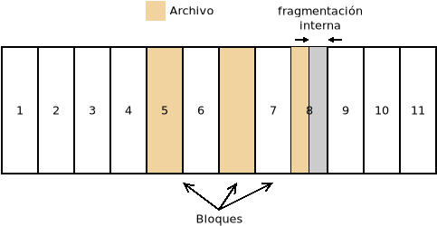

2.2.4. Gestión de archivos¶
Los datos almacenados en las memorias de almacenamiento (discos duros, tarjetas de memoria, etc.) se almacenan de forma permanente y, aunque también lo hacen en formato binario, la manera de hacerlo es totalmente distinta a la que se practica en la memoria principal. Como, además, los dispositivos de almacenamiento son muy dispares, el sistema operativo se encarga de abstraer al usuario y las aplicaciones de las particularidades del acceso y la escritura a través de la gestión de archivos.
Esta gestión la llevan a cabo los SSOO a través de un componente denominado sistema de archivos1.
2.2.4.1. Organización del dispositivo¶
Para que se puedan leer y escribir archivos sobre un dispositivo, se requiere primero dividirlo en partes que reciben el nombre de particiones2. A cada partición es posible asignarle un sistema de archivos distinto, que haga a la partición apta para la contención de archivos y directorios. Al proceso de dotar de un sistema de archivos a una partición se le denomina formatear.
Una vez creado el sistema operativo, el sistema operativo será capaz de definir una serie de operaciones sobre archivos como crear, borrar, mover, modificar o leer, que serán las que ordenen usuario y aplicaciones sobre el dispositivo y que podrán ser completadas gracias al controlador del dispositivo.
2.2.4.2. Sistemas de archivos¶
El sistema de archivos es el componente del sistema operativo encargado de administración y gestionar las memorias de almacenamiento. Sus principales funciones son:
Estructurar la información en archivos y directorios (contenedores de archivos).
Asignar espacio en el dispositivo a los archivos.
Permitir el acceso a estos archivos.
Gestionar el espacio libre disponible.
Existen distintos sistemas de archivos que serán usados dependiendo del sistema operativo instalado en el equipo. Por lo general, los sistemas operativos soportan varios sistemas de archivos, aunque usan preferentemente uno o varios sobre el resto.
2.2.4.2.1. Características¶
Los sistemas de archivos pueden disponer o carecer de ciertas características:
- Tamaño máximo (MA/MS)
Los sistemas de archivos tienen limitados el tamaño máximo de archivo y el tamaño máximo del propio sistema de archivos. En los que se usan modernamente, estos tamaños son lo suficientemente grandes como para no ser una preocupación, excepto en el sistema FAT, que aún se usa por su simplicidad en dispositivos externos de almacenamiento (4 GiB en ambos casos).
- Journaling
Cuando disponen de journaling los sistemas de archivos son capaces de gestionar transacciones3. El journaling sirve para combatir la corrupción de datos, por lo que un sistema que carezca de él será más propenso a corromperse ante un apagado inesperado de la máquina.
- Seguridad
Un sistema de archivos habilita la seguridad de los archivos cuando incluye en las propiedades de los archivos qué acciones sobre el propio archivo pueden hacer los distintos usuarios. Se profundizará en este aspecto al tratar el próximo epígrafe.
- Fragmentación
Como en el caso de la memoria principal, las escrituras y borrados provocan la fragmentación de los datos en los sistemas de archivos. Por lo general, estos siguen estrategias para minimizar y corregir la fragmentación. Una excepción, es FAT que no dispone de estos mecanismos y que, en consecuencia, tiende a presentar una gran fragmentación.
- Cuotas (Q)
Las cuotas permiten establecer cuál es el uso máximo que un usuario puede hacer del sistema de archivos. Por ejemplo, habilitaría para que no pudiera ocupar más de 1GiB en total. Por supuesto, requiere que el sistema tenga implementada la seguridad, porque de lo contrario no se podrá conocer a quién pertenece el archivo.
- Compresión (Z)
La compresión propicia que los archivos, de forma transparente, se almacenen comprimidos en el sistema de archivos, lo que permite ahorrar espacio de almacenamiento.
- Instantáneas
Esta característica da la posibilidad de guardar el estado exacto de un sistema de archivos en un instante dado. Esto permitiría retrotraerse a ese instante en cualquier momento futuro.
- Espacios virtuales
Es la capacidad del sistema de archivos para constituir una partición virtual (llamada volumen) uniendo distintas particiones físicas de un mismo disco o discos distintos.
- Cifrado
El sistema de archivos puede también tener la capacidad de cifrar los datos de forma transparente al almacenarlos sin necesidad de software adicional.
- RAID
La capacidad de constituir un sistema RAID posibilita crear almacenamientos tolerantes a fallos o mejorar los rendimientos de lectura y escritura. Consulte la sección del manual de linux dedicada a RAIDs para más información.
Nombre |
Sistema operativo4 |
MA |
MSA |
J |
S |
Q |
F |
Z |
I |
E |
C |
R |
|---|---|---|---|---|---|---|---|---|---|---|---|---|
FAT12 |
QDOS/MSDOS |
10MiB |
32MiB |
- |
- |
- |
- |
- |
- |
- |
- |
- |
FAT16 |
MSDOS |
4GiB |
4GiB |
- |
- |
- |
- |
- |
- |
- |
- |
- |
FAT32 |
Windows 9* |
4GiB |
8TiB |
- |
- |
- |
- |
- |
- |
- |
- |
- |
HPFS |
OS/2 |
2GiB |
2TiB |
- |
- |
- |
X |
- |
- |
- |
- |
- |
NTFS5 |
Rama NT de Windows |
16EiB |
16EiB |
X |
X |
X |
X |
X |
- |
- |
X |
- |
ext2 |
Linux (obsoleto) |
2TiB |
32TiB |
- |
X |
X |
X |
- |
- |
- |
- |
- |
ext4 |
Linux |
16TiB |
1EiB |
X |
X |
X |
X |
- |
- |
- |
X |
- |
btrfs |
Linux |
16EiB |
16EiB |
X |
X |
X |
X |
X |
X |
- |
- |
X |
XFS |
Linux |
8EiB |
8EiB |
X |
X |
X |
X |
- |
- |
- |
- |
- |
F2FS |
Linux |
4TiB |
16TiB |
X |
X |
X |
X |
- |
- |
- |
X |
- |
HFS |
MacOs clásico |
2GiB |
2TiB |
- |
- |
- |
X |
- |
- |
- |
- |
- |
HFS+ |
MacOS v10 |
8EiB |
8EiB |
X |
X |
X |
X |
X |
- |
- |
- |
- |
APFS |
MacOS >=v10.3 |
8EiB |
8EiB |
X |
X |
X |
X |
X |
X |
X |
X |
- |
JFS |
AIX |
4PiB |
32PiB |
X |
X |
X |
X |
X |
- |
- |
- |
- |
UFS6 |
Solaris, *BSD |
8ZiB |
8ZiB |
X |
X |
X |
X |
- |
- |
- |
- |
- |
ZFS |
Solaris, FreeBSD |
16EiB |
256ZiB |
X |
X |
X |
X |
X |
X |
X |
X |
X |
Además, para los dispositivos opticos se utiliza un sistema de archivos particular estandarizado denominado CDFS (y su sucesor UDF), también conocido por la norma ISO en que se define: ISO-9660.
Nota
También existen sistemas de archivos en red como NFS o CIFS, cuya utilidad es hacer accesible un sistema de archivos remoto. Se escapan al propósito de este módulo.
2.2.4.2.2. Estructura lógica¶
La estructura lógica es la visión de los datos que el sistema de archivos ofrece a usuarios y aplicaciones. En ella los datos se agrupan en archivos, de manera que un archivo es un conjunto de datos que constituyen una unidad y se manipulan como tal, la cual:
Ocupa cierto espacio en el dispositivo.
Tiene un nombre para poder referirla. Su localización física (los bloques que ocupa) es indiferente para aplicaciones y usuarios, ya que el nombre es la referencia que usarán para acceder a ellos.
Tiene asociadas unas propiedades que determinan cómo pueda llegar a ser usado.
Constituye bien un programa, bien una información que debe ser interpretada por un programa para que pueda ser útil. Por ejemplo, un archivo puede ser una foto, que requerirá un visor de imágenes para poder ser vista; o un documento PDF que requerirá de un programa capaz de interpretarlos y mostrarlos, etc.
Los archivos en el sistema de archivos se estructuran gracias a los directorios, que permiten agrupar archivos. De este modo, todo archivo está incluído dentro de un directorio. En consecuencia, un directorio (que es un archivo) también se encuentra incluido dentro de otro directorio, al que se denomina directorio padre. Para que el nivel de directorios no sea infinito debe existir un directorio que no tenga directorio padre, o mejor dicho, sea directorio padre de sí mismo: a este directorio cuyo padre es él mismo se le denomina directorio raíz del sistema de archivos y de él parte la estructura que adopta la forma de un árbol invertido, de ahí el nombre de árbol de directorios:
Para identificar inequivocamente a un archivo no se usa exclusivamente el nombre, ya que puede haber dos archivos distintos de igual nombre en distintos directorios, sino el nombre con la ruta para llegar a él. Hay dos rutas:
La ruta absoluta, que es la lista ordenada de directorios a partir del directorio raíz que debe seguirse para alcanzar el archivo. Por ejemplo, para llegar al archivo
passwdhay que pasar por el directorio raíz, el directorioetcy, finalmente, se alcanza el archivo. En los sistemas UNIX el directorio raíz se representa como/que es justamente el carácter que también se usa para separar los elementos de la lista. Por ese motivo la ruta es:/etc/passwd. En un sistema Windows, en cambio, el caracter es\, así que la ruta se expresa:\etc\passwd. Como la ruta absoluta de un archivo es única para cada archivo, este puede ser un identificador válido para referir al archivo.La ruta relativa, que es la ruta para llegar al archivo partiendo del directorio en que nos encontremos trabajando. Como podemos cambiar de directorio de trabajo, la ruta relativa no es única, sino que cambia según cuál sea este directorio de trabajo.
Nota
Abundaremos enormemente en esto al estudiar de forma práctica los sistemas operativos.
2.2.4.2.2.1. Propiedades¶
Los archivos tienen distintas propiedades:
- Nombre
Todos los archivos tienen un nombre que los identifica inequívocamente. Cómo sea el nombre dependerá del sistema de archivo en particular. En muchos sistemas modernos la longitud está limitada a 255 bytes, aunque en otros más antiguos como FAT, la longitud era muchos más reducida: 8 bytes para el nombre en sí y 3 para la extensión.
Además, es común que los nombres se descompongan en nombre y extensión, aunque en muchos archivos esta descomposición es a efectos prácticos más que porque el sistema de archivos haga tal división. La extensión está constituida por los caracteres que siguen al último carácter punto. Por ejemplo:
Nombre completo
Nombre
Extensión
protesta.pdf
protesta
pdf
index.html
index
html
retrato.jpg
retrato
jpg
capitulo.1.txt
capitulo.1
txt
y sirve para identificar el tipo de contenido del archivo y, en consecuencia, con qué programa debe tratarse.
Ver también
Puede echarle un ojo a las extensiones más habituales.
- Fechas
Cada archivo tiene asociadas varias fechas que indican un momento concreto relacionado con el propio archivo (cuando se creó, cuando se modificó por última vez, etc.). Analizaremos más detenidamente esto al tratar de forma práctica los sistemas operativos tras la unidad dedicada a su instalación.
- Propietario
Es el usuario que posee el archivo.
- Permisos
Son los que determinan quiénes están autorizados para realizar una determinada acción sobre el archivo (leerlo, modificarlo, etc.). Su análisis se pospone hasya cuando utilicemos en la práctica los sistemas operativos tras la unidad dedicada a su instalación.
- Tipo
Al tipo dedicaremos un epígrafe aparte.
2.2.4.2.2.2. Tipos¶
Hay, fundamentelmente, dos tipos de archivos:
- Regulares
Son los archivos que contienen información, bien porque contiene un programa total o parcialmente, bien porque contienen datos cuya finalidad es que sean procesados por un programa.
- Directorios
Son archivos cuya misión es ser contenedores de archivos de cualquier tipo, incluidos otros directorios.
También es común en los sistemas de archivos encontrar un tercer tipo:
- Enlaces
Son simplemente enlaces hacia otros archivos. Esto permite localizar un mismo contenido en dos ubicaciones distintas.
Además, en los sistemas UNIX todo se representa mediante un archivo, por lo que existen todo un conjunto de archivos especiales cuya misión no es almacenar información, sino representar dispositivos físicos o virtuales de E/S. De este modo existen:
- De bloque
Son archivos que representan dispositivos de bloques. Por ejemplo, en un Linux el archivo
/dev/sdaes un archivo de bloques que representa el primer disco duro (dispositivo físico de bloques).- De caracteres
Son archivos que representan dispositivos de caracteres. Por ejemplo, en un linux el archivo
/dev/psauxes un archivo de caracteres que representa al ratón (dispositivo físico de caracteres).- De tubería
Son archivos que representan tuberías (pipelines en la terminología inglesa), las cuales son un canal para comunicar dos procesos de un mismo sistema entre sí, de modo que los datos de salida de uno pasan como datos de entrada al otro.
- De socket
Son archivos que representan sockets, los cuales actúan como canal de comunicación entre dos o más procesos de un mismo sistema.
2.2.4.2.3. Estructura física¶
Físicamente un disco se compone de sectores, que es la unidad mínima que puede ser leída o escrita en un disco. Si escribiéramos o leyéramos a bajo nivel, esto es, prescindiendo de las estructuras que crea el sistema de archivos, leeríamos o escribiríamos como mínimo en cada acceso un sector. En los discos magnéticos el tamaño del sector es típicamente de 512 bytes, pero en los discos SSD el tamaño habitual es 4KiB.
En cambio, cuando creamos un sistema de archivos este divide el espacio en bloques7, constituidos por sectores contiguos, y que son la unidad mínima que usando el sistema de archivos podremos leer o escribir.
Cuando se almacena en disco un archivo este ocupará un determinado número de bloques que, dependiendo de los mecanismos de asignación que utilice el sistema de archivos, serán contiguos o no. Como un bloque es la unidad mínima, un mismo bloque no puede estar ocupado por más de un archivo, por lo que lo habitual es que el último bloque ocupado por dicho archivo no esté totalmente lleno y el espacio restante quede inútil, provocando una fragmentación interna. Por tanto, disminuir el tamaño de bloque reduce la fragmentación interna, pero a costa de perjudicar el rendimiento, ya que hay que leer mayor número de bloques que, además, es probable que no sean contiguos:
El tamaño de bloque, pues, más apropiado debe lograr un equilibrio entre la fragmentación interna y el rendimiento.
El concepto de fragmentación como pérdida de capacidad de almacenamiento es el que hemos descrito ahora y se analizó también para las memorias RAM. Sin embargo, al hablar de fragmentación en el sistema de archivos solemos referirmos a la fragmentación de los archivos dentro del disco, esto es, a que el contenido de un archivo no se almacene en bloques contiguos, sino repartido en dos o más conjuntos de bloques contiguos. Esta fragmentación no afecta a la capacidad de almacenamiento y en discos SSD esto no tiene excesiva importancia, pero en discos mecánicos, en los que hay que desplazar el cabezal para leer y escribir, la fragmentación afecta considerablemente al rendimiento, por lo que un sistema de archivos que habilite mecanismos para limitar la fragmentación es deseable. Este es el concepto de fragmentación que se usó al analizar las características de los sistemas de archivos.
Otro problema que debe resolver el sistema de archivo es conocer cuáles son los distintos bloques en los que está almacenado un archivo. Hay distintas técnicas:
- Asignación adyacente
Consiste en que el archivo ocupe siempre bloques adyacentes. Es muy sencillo ya que sólo es necesario saber cuál es el bloque en el que comienza el archivo. El problema es la enorme fragmentación externa que provoca esta estrategia.
- Asignación por lista enlazada
Consiste en almacenar en cada bloque, además del propio archivo, la dirección del siguiente bloque. El último bloque no apuntará a ninguno por lo que se sabrá que es el último.
- Asignación por lista enlazada y tabla
Es una variante del anterior en que se dispone una tabla que contiene un registro por cada bloque del sistema de archivos, de manera que el registro 0 se corresponde con el bloque 0, el registro 1 con el bloque 1, etc. Estos registros contienen la dirección del siguiente registro (o bloque) y el bloque se usa exclusivamente para almacenar la información del archivo. Como la tabla se carga en memoria, seguir la secuencia de bloques que constituyen un archivo es mucho más rápido, ya que no hay que acceder a disco. La contraprestación es que la tabla puede ocupar mucho espacio en memoria si el sistema de archivos es muy grande.
Esta técnica es la que usan los sistemas de archivos FAT16 y FAT32, siendo el número el tamaño en bits de las direcciones.
- Asignación basada en inodos
Es la típica de los sistemas de archivos propios de UNIX. En ellos hay:
Un superbloque que es un bloque que contiene las características del sistema de archivos y sin cuya lectura es imposible saber cómo leer el resto del sistema.
Un conjunto de bloques que contienen los datos (esto es el contenido de los archivos).
Un conjunto de bloques que contienen unas estructuras llamadas inodos8.
Cada inodo tiene un número identificativo único y contiene los metadatos asociados a un único archivo, esto es, sus propiedades (propietario, tamaño en bytes, permisos, etc, pero no el nombre) y una tabla de direcciones:
Las primeras direcciones apuntan directamente a bloques de datos: son las llamadas entradas directas.
Las últimas direcciones no apuntan directamente a bloques de datos, sino a bloques que a su vez contienen direcciones. Así, una entrada indirecta simple apunta a un bloque que contiene direcciones que apuntan a bloques de datos: una entrada indirecta doble apunta a un bloque que contiene direcciones que apuntan a bloques que contienen direcciones que apuntan a bloques de datos, etc.
Podemos ilustrarlo con un esquema tomado directamente de Wikipedia:

Por ejemplo, en el sistema de archivos descrito por el estándar POSIX la tabla de direcciones del inodo contiene 13 entradas, diez de las cuales son directas, una es indirecta simple, otra indirecta doble y otra indirecta triple. En este caso, si consideramos que:
Los bloques tienen 1KB de tamaño.
Las direcciones son de 32 bits (4 bytes).
Podemos extraer las siguientes conclusiones:
El tamaño máximo teórico para el sistema de archivos es \(2^{32}\) KB, o sea, 4 TB, ya que hay \(2^{32}\) direcciones posibles para los bloques y cada bloque tiene 1KB de tamaño.
Como cada archivo debe estar descrito por un inodo, la cantidad máxima de archivos posibles depende de cuál sea el máximo número de inodos que puedan identificarse. El identificador máximo depende de cuál sea el número de bits que en el código fuente que implementa el sistema de archivos, se hayan utilizado para representar al identificador. Si los identificadores fueran de 32 bits, entonces existirían \(2^{32}\) identificadores distintos, esto es, más de 4 mil millones.
El tamaño máximo de archivo depende de cuál sea el número máximo de bloques que puedan direccionarse a partir de un inodo. Partiendo de que los bloques son de 1KB (1024B) y que sus direcciones tiene 32 bits (4B) en cada bloque podemos almacenar 256 direcciones, esto es, \(2^{8}\). Por tanto:
Entradas
Direcciones 1
Direcciones 2
Direcciones 3
Direcciones 4
Directas
10
-
-
-
Indirectas simples
1
256
-
-
Indirectas dobles
1
256
256
-
Indirectas triples
1
256
256
256
Por tanto, el número de bloques que puede ocupar un archivo es \(10 + 2^8 + 2^{16} + 2^{24}\) y, como cada bloque tiene de tamaño un 1KB, el mayor tamaño teórico de un archivo es algo mayor a 16 GB. Sin embargo, como uno de las propiedades que se incluye en el inodo es el tamaño en bytes del archivo y para eso se usan 32 bits, el tamaño máximo expresable es de \(2^{32}\) bytes, esto es, 4GB.
Gracias, pues, a los inodos podemos referir en qué bloques de datos se encuentra el contenido de los archivos y cuáles son las propiedades del archivos. Ahora bien, entre esas propiedades no se encuentran el propio nombre del archivo. Esto es debido a que los directorios son también archivos cuyo contenido es básicamente una tabla de dos columnas que relaciona los nombres de los archivos que contiene con el inodo que representa a cada uno.
Ver también
Para un análisis en mayor profundidad de los sistemas de archivos en UNIX consulte estos apuntes universitarios.
Ver también
También es interesante esta descripción (en inglés) del sistema de archivos ext4 de Linux.
Notas al pie
- 1
O sistema de ficheros. Es común usar indistintamente el término archivo o fichero en castellano.
- 2
Cómo y cuántas particiones pueden realizarse se abordará con detalle en la próxima unidad.
- 3
Una transacción está compuesta por varias acciones cuyo conjunto debe considerarse atómico, esto es, o se llevan a cabo todas o no debe llevarse a cabo ninguna. El concepto es ampliable a otros aspectos de la informática. Para entenderlo consideremos una venta: vender un producto implica por un lado apuntar el cobro y por otro lado restarlo del inventario. Deben llevarse a cabo las dos acciones, porque de lo contrario habrá un descuadre.
- 4
Los sistemas referidos son los sistemas que lo tienen como sistema de archivos habitual, no los que son capaces de soportarlo.
- 5
NTFS introdujo cifrado en su versión 3.0 a través de una característica llamada EFS. Está disponible en todas las versiones de Windows que no sean Home.
- 6
UFS deriva del sistema de archivos de Berkeley usado en el BSD original. En algunos sistemas como Solaris o FreeBSD ha sido sustituido por ZFS.
- 7
En los sistemas de archivos de Windows se usa el término clúster en vez de bloque.
- 8
A diferencia de lo que ocurre con los bloques de datos, en cada uno de los cuales sólo puede haber datos correspondientes a un archivo, en los bloques que almacenan inodos, sí puede haber varios inodos en un mismo bloque.